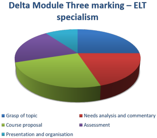

Delta Module Three: before you submit

Not so fast!
Before you submit your Module Three assignment, there are a number
of things to do.
 |
Proofreading |
This is not just a matter of running the text through a spell
checker. They aren't too good at recognising homophones.
It is generally preferable to get someone else to check your work
because they will read what you wrote, not what you think you wrote.
Apart from simple matters of spelling and lexical and syntactical accuracy, you need to check:
- Your use of terminology and subject-specific concepts.
- Is your use of any specific terminology accurate?
Have you checked?
Both ELT and Management theory are infested with terminology, some of it transparent, some more opaque.
When you have used a technical term, have you defined it and shown that you understand what it means?
- Is your use of any specific terminology accurate?
Have you checked?
- Coherence:
- Does the content of each section match what the (sub)heading leads the reader to expect?
- Do you make clear links between the sections, referring back and forward where necessary so the text is clearly signposted?
- Have you maintained relevance or are there parts of the text which are too general and not linked to your specialism?
- Do your appendices contain discussion that should be in the main text?
- Have you clearly signposted where in the appendices the reader can find the relevant support for your discussion? Don't make the reader hunt around. Label the appendices logically.
- Style:
- Have you avoided sounding too assertive with terms like Clearly, Obviously, Certainly, rightly, unarguably, definitely etc.?
- Have you avoided contractions and colloquialisms?
- Is the presentation consistent, with the same fonts and text sizes for headings, subheadings and citations etc.?
- Are any citations from authority clearly identifiable using "inverted commas" or indenting text in a different font or font size?
- Have you referenced everything appropriately and accurately? Plagiarism checks are in place in Cambridge.
- Is your bibliography correctly set out?
- Presentation:
- Make sure you have
- a proper cover sheet with the usual data (name, title, date, centre number (if you have a centre), candidate number (if you have been given one)
- numbered all the pages
- included a footer with your name and the assignment title
- a conventional bibliography between the text and the appendices
- Respected the maximum word count
(4000 – 4500 words) and put the number on the cover page, along
with the version of the word-processing program which checked it for you.
This is from the Delta Module Three Manual published by Cambridge:
Candidates should ensure that the main body of the assignment does not exceed 4,500 words (from contents page until the beginning of the bibliography). Assignments up to 100 words over-length will be marked but will be subject to loss of marks. However, assignments over 4,600 words will be returned unmarked.
If your assignment is near the lower end, what have you left out?
- Make sure you have
Getting all these things right is not just a cosmetic exercise. The impression you give is important and, incidentally, worth 10% of the overall marks awarded. You can start at +10% simply by presenting and organising your text appropriately and accessibly.
 |
Remembering how the assignment is marked |
Your report is marked as follows:
| ELT Specialism | ELT Management topic |
|
|
It looks like this:
|  |
 |
You can see that the marks are spread pretty evenly so you have to give each section equal attention and probably equal space.
Module Three is marked externally out of a maximum possible mark of
140. The marks you need to get are, approximately:
Pass: 80 | Pass with Merit: 100 | Pass with Distinction: 120
 |
Avoiding the obvious weaknesses |
Principal Examiner's reports often comment on the most frequent
weaknesses markers complain about. They are more or less the
same every year.
Here they are:
- not basing the whole assignment and course on the chosen
specialism
- So, apart from in the introduction, where you show a grasp of the whole area, make sure that what you say is relevant to what you are doing
- not adequately researching the chosen specialism
- So, do your research thoroughly and make sure you understand competing authorities and their views
- lack of theoretical underpinning in some or all sections
- So, refer to theory frequently
- failure to analyse learners’ needs adequately and identify
learning priorities from the analysis or, for the Management
option, failing to carry out a good enough situation analysis
- So, use the data you have collected
- failure to link the design of the course to the needs
identified or, for the management option, failing to link the
proposal to the benefits and the situation analysis
- So, keep your list of priority areas in mind when you design the course. Make sure that the course content reflects the needs you have prioritised.
- lack of clarity as to what is to be tested, when and how
during the course or, for the Management option a lack of
clarity in the implementation plan concerning who does what
when.
- So, set this section out carefully distinguishing between formative and summative assessment procedures clearly
- So, do the same for the implementation plan making it clear who does what, when and who checks it's been done
- lack of clear development of argument within sections and
links between sections
- So, refer frequently to earlier and later parts of the essay while you are writing so the essay is not a set of independent sections but a coherent whole
- not adhering to the word-count
limitations. Overall, the essay should be between 4,000
and 4,500 words. Deviations will be penalised. If it
is more than 4,600 words, it will not be marked at all.
- Check the number of words and be strict. State, too, which version of which word processor you have used to make the count.
When you re-read your assignment, keep that list by you.
Can you be accused of any of it? If the answer is yes, then
re-visit and re-write that section.
The guides on this site to each section also tell you the most
common weaknesses so it may pay to check those again.
Ticking it all off |
OK. Now you have proofread your assignment, checked for
accuracy and avoided all the banana skins, you are almost ready to
submit it for assessment.
There's one final checklist recommended by the Principal Examiner
for the Module and it looks like this:
| Have I | Yes or No | |
| clearly chosen a specialism from the list provided, and indicated this on the cover page? | ||
| outlined key features of the specialism and indicated what distinguishes it? | ||
| referred to and commented on background reading and key sources throughout? | ||
| discussed principles underlying
needs analyses, diagnostic tests, course and syllabus design
etc.? or, for the Management option: discussed principles of change management, situation analysis and implementation |
||
| clearly justified my choice of needs
analysis tools? or for the Management option: clearly justified my choice of situation analysis tools? |
||
| included what is required in the
separate appendices? For an ELT specialism:
For the Management option:
|
||
| analysed the results of the
diagnostic tests adequately? or, for the Management option: analysed the situation thoroughly on sound theoretical bases? |
||
| justified the learning priorities I
have identified clearly in relation to my needs
analysis? or, for the Management option: justified the proposed innovation in terms of the strategic needs of the language teaching operation? |
||
| justified my course objectives in
terms of learner needs? or, for the Management option: justified my proposed innovation in terms of the organisation as a whole? |
||
| added my course plan and Needs
Analysis / Diagnostic Test summary results as an appendix to
the main body of the text? or, for the Management option: added my Situation analysis results and my Implementation plan as an appendix to the main body of the text? |
||
| included sufficient detail in my
course plan or, for the Management option: included sufficient detail in my implementation plan? |
||
| outlined how the course will be
evaluated? or, for the Management option: outlined how the success of the innovation will be evaluated? |
||
| respected the word-limit and indicated the word count and the version of the word processor program used on the cover page? | ||
| linked all parts of the assignment coherently to one another? | ||
| signposted all the appendices clearly in the main body of the text? |
If you would like this grid as a PDF document, click here.
 |
All done?
|